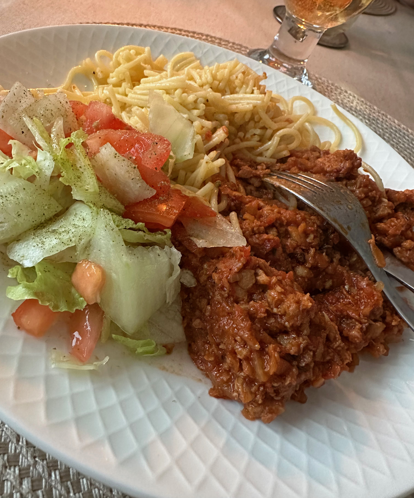

Vegofärssås med spaghetti
Väldigt gott alternativ till köttfärssås. Vegofärs är oftast billigare och ett välkommet alternativ mellan varven. Även hos barnen.
Detta recept avser fyra portioner.

Ingridienser:
- Vegofärs 325 g
- Rapsolja 1 msk
- Gul lök x 1
- Morot x 1
- Vitlöksklyftor x 2
- Tomatpuré 1 msk
- Krossade tomater 600 g
- Tärningar grönsaksbuljong x 2
- Balsamvinäger 1 msk
- Vatten 1 dl
- Torkad timjan 1 tsk
- Torkad oregano 1 tsk
- Strösocker 1 tsk
- Salt
- Peppar
Gör så här:
- 1. Finhacka lök och vitlök.
- 2. Riv moroten grovt på rivjärn.
- 3. Bryn den frysta vegofärsen i olja i en stor stekpanna eller kastrull.
- 4. Blanda i lök, vitlök, morötter och tomatpuré. Låt fräsa tillsammans i ca 3 minuter.
- 5. Tillsätt krossade tomater, vatten, smulad grönsaksbuljong, balsamvinäger, timjan och oregano.
- 6. Sänk värmen och låt såsen sjuda i minst 15 minuter. Smaka av med salt och peppar.
Servera med spaghetti eller annan önskad pasta.